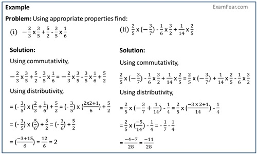

Distributive property of multiplication over addition and subtraction for rational numbers
The distributive property of multiplication is:
- Over addition: a(b + c) = ab + ac
- -3/4 {2/3 + (-5/6)} = -3/4 {(4+(-5))/6} = (-3/4) x (-1/6) = 3/24 = 1/8
- -3/4 {2/3 + (-5/6)} = -3/4 x 2/3 + (-3/4) x (-5/6) = -1/2 + 5/8 = (-4+5)/8 = 1/8
- Over subtraction: a(b - c) = ab - ac
- -3/4 {2/3 - 5/6} = -3/4 {(4-5)/6} = (-3/4) x (-1/6) = 3/24 = 1/8
- -3/4 {2/3 - 5/6} = -3/4 x 2/3 - (-3/4) x 5/6 = -1/2 + 5/8 = (-4+5)/8 = 1/8
